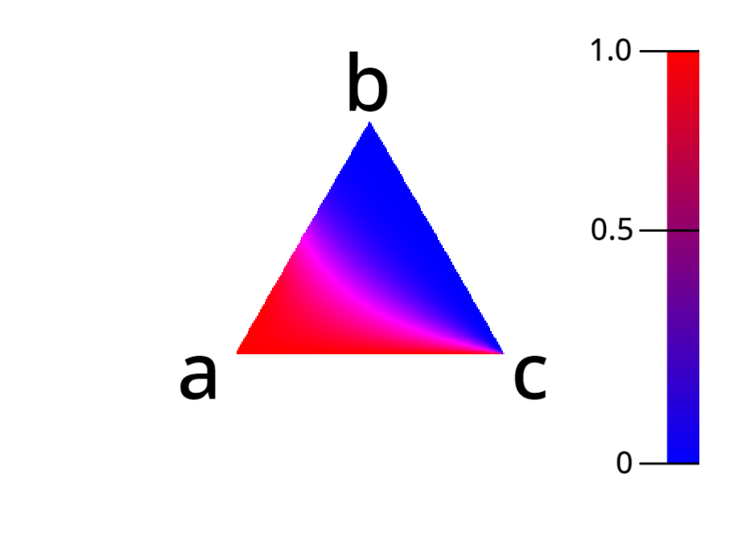

$n$人でじゃんけんしてパーを出し続けたとき、勝率はどうなるのか?
桜美林大学の芳沢光雄教授によると、統計的に人間が出す手の確率を調べた結果、グーは35.0%、 チョキは31.7%、 パーは33.3%でした。みんながこの確率に従うとき、$n$人でじゃんけんしてパーを出し続けると勝つ確率はどうなるのかということが気になったので、計算して求めることにしました。
じゃんけんの条件
じゃんけんの条件を決めなければ計算できません。そのため、ここで扱うじゃんけんの条件は以下のように定義します。
じゃんけんの条件
・$n$人でじゃんけんをする
・$A$はパーを出し続ける
・$A$以外の人はグーを$P_{rock}$、チョキを$P_{scissors}$、パーを$P_{paper}$の確率で出す
・勝った人同士で再度じゃんけんを行い、1人になるまで繰り返す
求める確率は上記の条件下で最後まで残った1人が$A$である確率です。
これを$P(A wins|n)$とします。
$n$人で一回じゃんけんしてあいこになる確率$P(draw|n)$
$P(Awins|n)$を求めるにはあいこになる確率を求める必要があります。
あいこになる確率は、あいこになる余事象、すなわちあいこにならない確率から求めます。
$A$はパーを出し続けるので、あいこにならないのは$A$以外の人が①「グーやパーを出すパターン(全員パーは含まない)」、②「チョキやパーを出すパターン(全員パーは含まない)」があります。
①は上の図のようなパターンが考えられます。よって、①になる確率は①のそれぞれのパターンの和を求めればいいので、
であるから、①は二項定理より$(P_{rock}+P_{paper})^{n-1}-P_{paper}^{n-1}$と表せます。
また、②は①と同様の手法で$(P_{scissors}+P_{paper})^{n-1}-P_{paper}^{n-1}$と表せます。
よって、あいこにならない確率は①と②の和になるので
したがって、あいこになる確率は
これを$P(draw|n)$とします。
すなわち、
$P(draw|n)=1-\{(P_{rock}+P_{paper})^{n-1}+(P_{scissors}+P_{paper})^{n-1}-2P_{paper}^{n-1}\}$
$n$人で一回じゃんけんして$A$を含む$m$人が勝つ確率$P(win|n,m)$
$P(Awins|n)$を求めるにはこの確率も求める必要があります。この確率は一回のじゃんけんで勝敗が決まったときの確率です。

この確率は上の図のように、「$A$はパーを出し続けるので、勝つ$m$人($A$を除いた$m-1$人)はパーを出し、負ける$n-m$人はグーを出す」と考えることができ、
となります。これを$P(win|n,m)$とします。
すなわち、
$P(win|n,m)={}_{n-1}C_{m-1}・P_{rock}^{n-m}・P_{paper}^{m-1}$
$n$人でじゃんけんして最後まで勝ち残った1人が$A$である確率$P(Awins|n)$を求める
$P(Awins|n)$を求めるために、2人でじゃんけんして最後まで勝ち残った1人が$A$である確率$P(Awins|2)$を求めます。
$P(Awins|2)$は
2人でじゃんけんして、
(1回目に$A$が勝つ)または(2回目に$A$が勝つ)または(3回目に$A$が勝つ)または$\dots$
すなわち、
2人でじゃんけんして、
(あいこにならずに$A$が勝つ)または(1回あいこになり、その後$A$が勝つ)または(2回あいこになり、その後$A$が勝つ)または$\dots$
と考えることができるので、式にすると
これは初項$P(win|2,1)$、公比$P(draw|2)$の無限等比級数の和と考えることができるので、公比$P(draw|2)$が$P_{paper}\neq1$のとき、$0\leqq{P(draw|2)}<1$で、無限等比級数の和の公式から
$P(Awins|2)=\frac{P(win|2,1)}{1-P(draw|2)}$
($P_{paper}=1$のときはじゃんけんが永遠に続くことになるため、議論しない。)
$P(Awins|3)$も求めます。
$P(Awins|3)$は
3人でじゃんけんして、
($A$が一人勝ちする)または($A$が二人で勝ち、その後に$A$が勝つ)
と考えることができるので、$P(Awins|2)$を求めたときと同様に、式にすると
よく見ると式の中に$P(Awins|2)$が含まれていて、
$\frac{P(win|2,1)}{1-P(draw|2)}=P(Awins|2)$と書き換えられるので、
$P(Awins|n)$を求めます。
$P(Awins|3)$を求めたときと同様に考えて、$P(Awins|n)$は
$n$人でじゃんけんして、
($A$が一人勝ちする)または($A$が二人で勝ち、その後に$A$が勝つ)または$\dots$または($A$が$n-1$人で勝ち、その後に$A$が勝つ)
と考えることができ、式にすると
となり、$P(Awins|1)=1$とすると$\sum$を使ってまとめることができ、
$P(Awins|n)$の計算式を得ることができました。
$P(Awins|n)$のわかっていること、わかっていないこと
わかっていること
・$P(Awins|2),P(Awins|3),P(Awins|4)$の一般解
→写真・全ての自然数$n$において、$P(Awins|n)=\frac{1}{n}$が成り立つ
→写真・特殊な場合($P_{paper}=0$など)の一般解
→写真・乱数を用いてじゃんけんのシミュレーションを行い、$P(Awins|n)$を求めたところ、数式で求めた確率と近しい値になった
都合上、写真では$P(Awins|n)$を$h(n)$、$P_{rock}$を$a$、$P_{scissors}$を$b$、$P_{paper}$を$c$と書いています。
わかっていないこと
・計算式は収束するか？また、収束するとき極限はどうなるか？
・計算式は閉じた形の式であらわせないか？
・求めた値は正確なのか？(分数で計算して、大きなずれは確認できなかったので、正確だと思われる)
・2000人以上の値はどうなるのか?($n$が増加すると計算量が指数関数的に増加するため、計算できていない)
$P(Awins|n)$のビジュアル
出す手の確率がそれぞれ$P_{rock},P_{scissors},P_{paper}$だから、その和は$P_{rock}+P_{scissors}+P_{paper}=1$となります。そのため、$P_{rock}$を$x$座標、$P_{scissors}$を$y$座標、$P_{paper}$を$z$座標とする点は、$x+y+z=1$という平面の方程式を満たします。また、$0\leqq{P_{rock}}\leqq{1},0\leqq{P_{scissors}}\leqq{1},0\leqq{P_{paper}}<1$であるので、点の集合は$(1,0,0),(0,1,0),(0,0,1)$を頂点とする三角形で表すことができます。$n$の値を定めて、三角形上の点の$P(Awins|n)$を求め、0に近ければ青、1に近ければ赤で描き、図にすると以下のようになります。
↑$n=1$のときの図
↑$n=2$のときの図
↑$n=3$のときの図
↑$n=4$のときの図
↑$n=5$のときの図
↑$n$を1~15に増やしていったのときのアニメーション
この研究のポスターはこちら
出す手の確率の引用:日本じゃんけん協会
https://japan-rps.jimdofree.com
Contact:youheguchi918@gmail.com